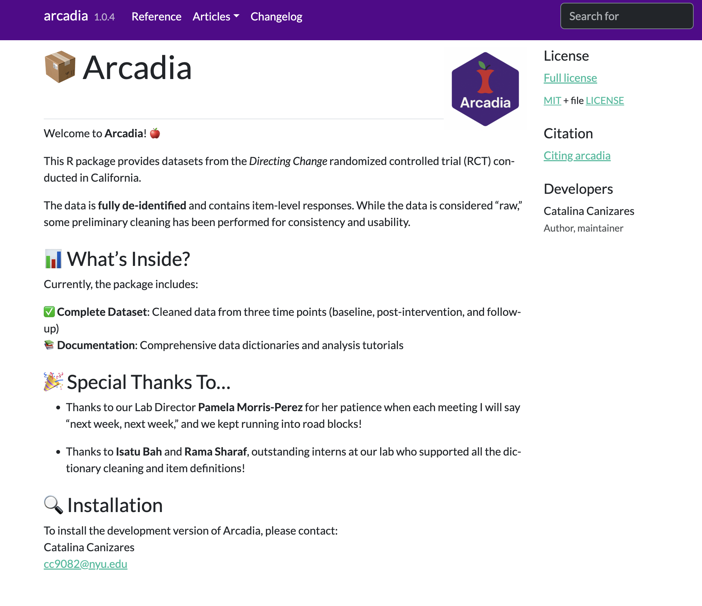

Projects
Data Systems
Youth suicide research often overlooks the contextual factors that shape adolescents’ lives - their schools, neighborhoods, and communities. Current data systems segment information by individual characteristics, missing the broader environmental picture. We’re developing an innovative data system that integrates administrative data across national, state, and district levels to identify place-based trends in suicidal behaviors and inform policy solutions. Using a user-centered, participatory design approach, this project will build tools that empower researchers, agency leaders, and communities to understand local suicide contexts and develop targeted interventions for youth suicide prevention.
Directing Change RCT

I analyze the data from the cluster randomized trial providing evidence on the impact of Directing Change (directingchangeca.org). I cleaned the data, created a data R package to analyze the data and currently writing impact papers.
Dissertation - Comparing Supervised Machine Learning Classification Methods to Identify Risk Factors for Suicide Morbidity Among USA High School Students
My dissertation explores whether supervised machine learning (ML) models can outperform traditional statistical methods in predicting adolescent suicide attempts, using data from the 2017, 2019, and 2021 Youth Risk Behavior Surveillance System. The results demonstrate that integrating LASSO with logistic regression and addressing data imbalance significantly enhances predictive sensitivity, achieving an 80% accuracy rate. If you’d like to learn more, listen to this podcast:

dissertationData: An R Package for clean 2017, 2019 and 2021 YRBS Data

My dissertation is built upon data gathered from the 2017, 2019 and 2021 Youth Risk Behavior Surveys (YRBS). To simplify access to this data, I’ve created an R package that is available for public use. This package provides a user-friendly way for others to explore and utilize the data. Check the package website here 👀
R Club
As I approach the completion of my Ph.D. and begin my search for postdoctoral positions, I have observed that coding skills are consistently listed as a requirement in job descriptions. My motivation to learn coding during my program stemmed from personal interest rather than a formal requirement. With the goal of inspiring my peers, I co-founded an R club with another Ph.D. student from my college. We have designed a curriculum and are on the verge of starting our sessions. To learn more about this project, click here 👀
Using Tree-Based Models to Identify Factors Contributing to Trait Negative Affect in Adults With and Without Major Depression
Our work has been published in BMC Psychology! This study examines how cognitive schemas, attributional style, childhood adversity, and lifestyle factors (alcohol, drug use, and physical activity) predict Negative Affect in both depressed and non-depressed adults in Colombia 🇨🇴 using regression trees. The findings revealed that cognitive schemas of disconnection/rejection and impaired autonomy significantly impact negative affect, with childhood adversity as a crucial determining factor. Read the full publication here
Persistent Sadness and Hopelessness in Youth: A Supervised Machine Learning Classification Approach to Identify Risk Factors
Feelings of hopelessness in adolescents have been consistently linked to mental health outcomes such as depression and suicidality, including suicide ideation and attempts. In recognition of its importance, hopelessness has been added to the DSM and is considered within risk-factor guidelines and integrated into structured suicide-risk assessments. Despite this, research exploring risk factors that increase the likelihood of adolescents feeling hopeless is scarce and hopelessness has acquired secondary consideration in literature. Therefore I am working in a publication that aims to address this gap by investigating the effect of intra and interpersonal risk and protective factors on adolescent hopelessness. Check out the poster 
World Trade Center Health Study in Florida
I currently serve as the research coordinator for a pilot study investigating the physical and mental health of first responders and survivors of the 9/11 attacks residing in Florida. Our team is currently in the first phase of the project, where we are working to collect as much data as possible.
In my role, I have focused on coordination and strategic planning, and have contributed several ideas to the project. One of these ideas was to develop a website that could provide comprehensive information to potential participants and present a welcoming and aesthetically pleasing interface. To achieve this goal, I collaborated with two colleagues from FIU to design and develop a beautiful website. I invite you to visit the website and explore its content.

First Responders Care Corner
I hold a deep passion for the wellbeing and mental health of disaster first responders. My research journey is driven by the goal of equipping these invaluable individuals with resources that guide them to a wealth of information and relevant referrals. In collaboration with Professor Mark Macgowan, we have come together to establish a comprehensive website. This platform is meticulously designed to serve as a valuable space for disaster first responders, offering a hub of essential information and connections to appropriate resources. I invite you to take a closer look at our efforts by visiting the website: Mental Health Matters for First Responders.